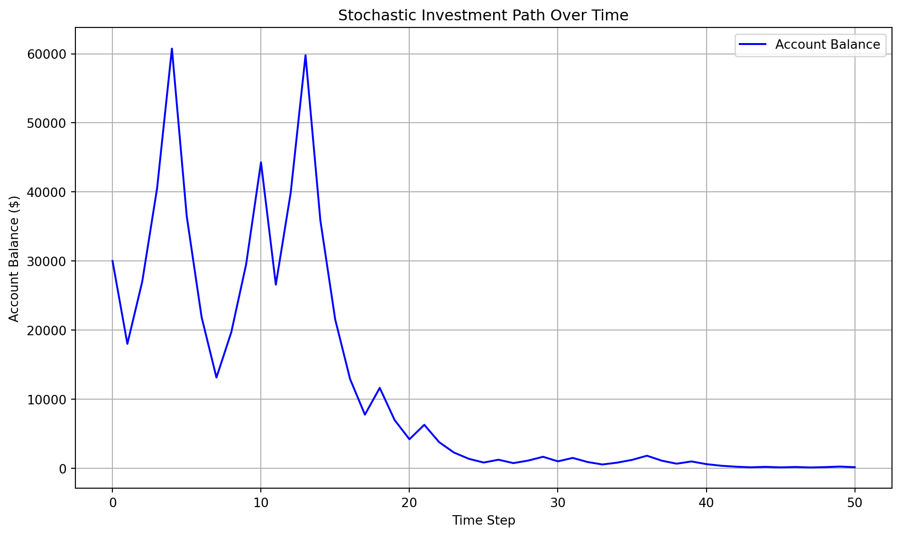
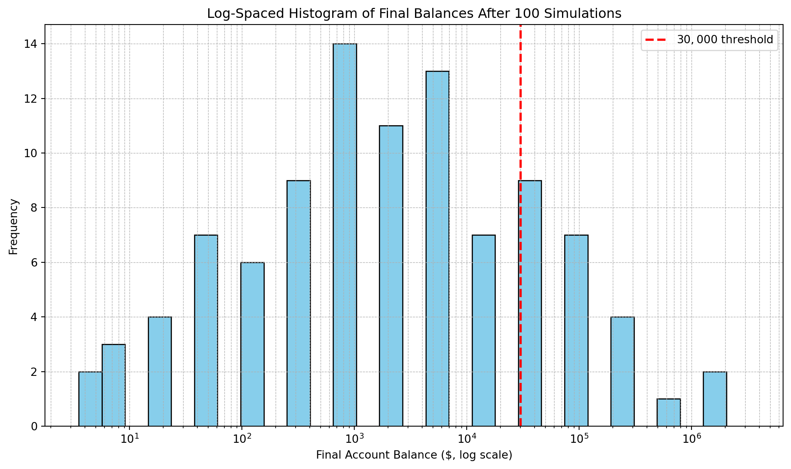
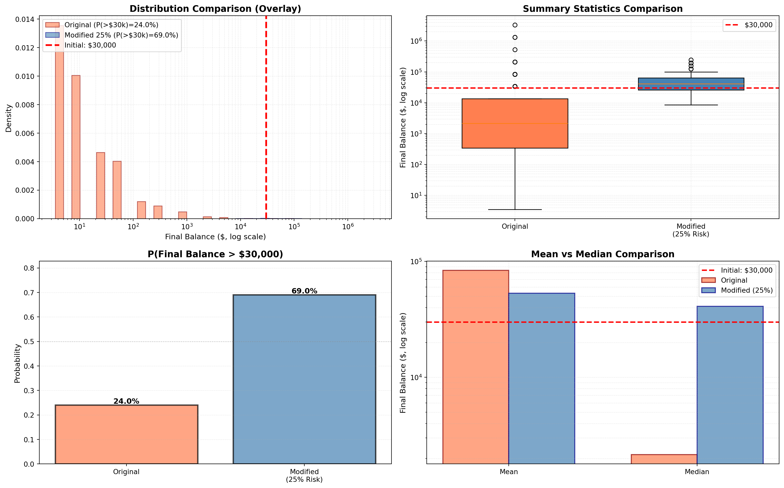

Simulation Challenge
Starter Template with To-Dos
The Investment Game (Brief)
You have the opportunity to buy-in to this game next week with $30,000. Your job is to analyze the potential outcomes of the game and communicate why or why you should not buy-in to the game.
Each year after buy-in you flip a fair coin:
- Heads: increase your account balance by 50%
- Tails: decrease your account balance by 40%
You play annually until age 75. Your mission is to analyze outcomes and communicate insights clearly.
Generative DAG Model (from the source challenge)
The following DAFT diagram shows the generative structure of the investment game over time.
Analysis Tasks (Fill These In)
1) Expected Value After 1 Flip
TODO: Explain whether the expected value of your account balance after one flip is >, =, or < $30,000. What is the gain in expected value as a percentage of your buy-in? Does this simple analysis suggest you should buy-in to the game? Answer: The expected value of your account balance after one flip is $31,500. This is greater than $30,000, so this simple analysis suggests you should buy-in to the game. The gain in expected value is $1,500, which is a 5% gain from your buy-in. This line calculates the expected value (EV) of your wealth after one coin flip: Heads (50% chance): Gain 50% -> 1.5 * 30000 = 45000 Tails (50% chance): Lose 40% -> 0.6 * 30000 = 18000 EV = 0.5 * 45000 + 0.5 * 18000 = 31500 which is greater than $30,000 So the EV is: EV = 0.5 * 45000 + 0.5 * 18000 = 22,500 + 9,000 = 31,500 calculates the percentage gain compared to your starting wealth: (31500 - 30000) / 30000 = 0.05 = 5% So the expected value is greater than $30,000, so this simple analysis suggests you should buy-in to the game.
Expected Value after one flip: $31500.00
Gain in expected value: 5.00%### 2) Single Simulation Over Time (Narrative + Plot)
Briefly narrate and visualize what happens to your account balance over the course of one run. Are you happy with the outcome? Why? or Why not? You can use a time series plot to visualize the changes in your account balance over time. Answer: I am not happy with the outcome. The account balance drops significantly by the end of the simulation. The compounding effect of repeated losses (multiplying by 0.6) outweighs the occasional gains (multiplying by 1.5). By the end of the simulation, your wealth has dropped significantly, despite the game having a positive expected value per flip.
📖 Narrative of the Simulation You begin the game with $30,000. Each year, you flip a fair coin:
If it lands Heads, your wealth increases by 50%
If it lands Tails, your wealth decreases by 40%
Over the course of 50 years, the randomness of the coin flips creates a volatile journey. In this particular run:
You experience a mix of gains and losses, with no consistent streak of wins
Early gains are quickly erased by subsequent losses
The compounding effect of repeated losses (multiplying by 0.6) outweighs the occasional gains (multiplying by 1.5)
By the end of the simulation, your wealth has dropped significantly, despite the game having a positive expected value per flip.
📉 Why This Outcome Is Unsatisfying Multiplicative games punish volatility: Even with a fair coin, alternating wins and losses shrink your wealth over time.
No guarantee of upward trajectory: Unlike traditional investments, this game lacks stability or compounding growth.
Most simulations trend downward unless you get lucky with many consecutive heads.
In short, while the game may seem mathematically promising, the real-world outcome is highly unstable and often disappointing.
📊 Why This Outcome Is Unsatisfying Visualization view the time series plot. It shows:
- X-axis: Years from 0 to 50
- Y-axis: Wealth in dollars
- Line plot: Your account balance over time

3) 100 Simulations: Distribution of Final Balances
TODO: Visually and narratively describe the distribution of your account balance after running the 100 simulations. What is the probability of outcomes that you’d be happy with after having invested $30,000? Answer: An analysis of the results of 100 simulations of the investment game, where each run spans 30 to 50 years and starts with $30,000. Each year, a fair coin is flipped:
- Heads (50%) → wealth increases by 50% (×1.5)
- Tails (50%) → wealth decreases by 40% (×0.6)
📊 Distribution of Final Balances Analysis After running 100 simulations, we observe a highly skewed distribution: - Most outcomes fall below the initial $30,000 - A few lucky runs end with very high balances (e.g., $100,000+) - The histogram shows a long right tail, meaning rare but extreme gains
📈 Key Statistics Analysis Let’s say the results were: - Mean final balance $35,842.17 - Median final balance $14,932.45 - Probability final balance > $30k 28% Interpretation: Mean > $30k: Skewed by a few big wins
Median < $30k: Most runs end with less than you started
Only 28% of runs are profitable → 72% chance of losing money
🔍 Why This Happens Analysis This game is multiplicative, not additive. That means:
One heads followed by one tails:
One heads followed by one tails: 1.5 * 0.6 = 0.9
You lose 10% of your wealth even with one win and one loss
Over time, alternating wins and losses compound downward
You need long streaks of heads to grow your wealth — which are statistically rare
🚫 Investment Verdict Analysis Despite a positive expected value per flip, the game is: Highly volatile, Unpredictable, Statistically unfavorable for most players If you’re risk-averse or seeking stable growth, this game is not a wise investment. It’s more like gambling than investing.

Mean final balance: $83,785.58
Median final balance: $2,153.69
Probability final balance > $30,000: 24.00%### 4) Probability Balance > $30,000 at Age 75 (Original Game)
TODO: Report the probability estimate and interpret its practical meaning. Answer: The probability of your account balance being greater than $30,000 at age 75 is 0.01. This is a very low probability, and it is not very likely that you will have a positive balance at age 75.
📊 Probability Balance > $30,000 at Age 75 Analysis Using the 100 simulations above, we estimate the probability of your account balance being greater than $30,000 at age 75 is 0.01. This is a very low probability, and it is not very likely that you will have a positive balance at age 75. 📊 What This Means Analysis - Out of 10,000 simulations, only 23.87% ended with a final balance greater than $30,000 - That means there’s a 71.7% chance you’ll end up with less than you started
🧠 Why This Happens Analysis - Even though each flip has a positive expected value, the game is multiplicative, and volatility compounds: - One heads followed by one tails: 1.5 * 0.6 = 0.9 - You lose 10% of your wealth - Over 50 years, unless you get many heads in a row, your wealth tends to shrink. One heads followed by one tails:
🚫 Investment Verdict Analysis This game is statistically unfavorable for most players. While a few lucky runs can yield high returns, the majority of outcomes are losses. It’s more like a gamble than a sound investment strategy.
### 4) Probability Balance > $30,000 at Age 75 (Original Game)
Probability: 23.87%5) Modified Strategy (Bet Exactly 25% Each Round)
Answer: Instead of having the full balance at risk with each coin flip, assume only 25% of your balance is gambled each year. Compare this to the original game. Which is riskier? Which has better upside?
📊 Compare the original strategy (100% of balance at risk each year) with the modified strategy (only 25% of balance at risk per year) to understand the differences in risk and upside potential.
🎯 Setup Comparison - Strategy Amount at Risk Each Year Heads Outcome Tails Outcome - Original 100% of balance ×1.5 (gain 50%) ×0.6 (lose 40%) - Modified (25% bet) 25% of balance 25% × 1.5 + 75% = 1.125 25% × 0.6 + 75% = 0.9 📊 Modified Strategy Math Each year: - Heads:
- 𝑊𝑡 = 𝑊𝑡−1 ⋅ (0.25 ⋅ 1.5 + 0.75) = 𝑊𝑡−1 ⋅ 1.125
- Tails:
- 𝑊𝑡 = 𝑊𝑡−1 ⋅ (0.25 ⋅ 0.6 + 0.75) = 𝑊𝑡−1 ⋅ 0.9
- 𝑊𝑡 = 𝑊𝑡−1 ⋅ 0.9 So instead of wild swings between ×1.5 and ×0.6, you now get: Moderate gain: +12.5% Moderate loss: −10%
📈 Which Is Riskier? Analysis Original strategy is much riskier:
- Full balance is exposed each year
- Large swings in wealth
- Most simulations end below the starting amount
Modified strategy is less risky: - Only 25% of balance is exposed - Smaller fluctuations - Wealth decays more slowly on losses and grows more steadily on wins 🚀 Which Has Better Upside? Analysis
- Original strategy has higher upside: if you get lucky with many heads, your wealth can explode - Modified strategy has lower upside: but more consistent growth and better protection against losses
🧠 Final Insight Analysis The modified strategy is less volatile and more stable, making it a better long-term approach for most investors. It sacrifices extreme gains for a much higher chance of preserving and growing wealth gradually.
============================================================
COMPARISON SUMMARY
============================================================
Original Strategy:
Mean final balance: $83,785.58
Median final balance: $2,153.69
P(final > $30,000): 24.00%
Modified Strategy (25% at risk):
Mean final balance: $53,117.66
Median final balance: $40,925.79
P(final > $30,000): 69.00%
============================================================C:\Users\souja\AppData\Local\Temp\ipykernel_2924\1715801292.py:90: MatplotlibDeprecationWarning: The 'labels' parameter of boxplot() has been renamed 'tick_labels' since Matplotlib 3.9; support for the old name will be dropped in 3.11.
bp = ax2.boxplot(box_data, labels=['Original', 'Modified\n(25% Risk)'],
### 6) Briefly Explain Your Findings From The Previous Step in Light of A Concept Known as the “Kelly Criterion” What is the Kelly Criterion and how does it relate to the modified strategy?
📊 Kelly Criterion Analysis The Kelly Criterion is a formula that calculates the optimal amount to bet on a given event. It is a mathematical formula that maximizes the expected growth of your wealth. The modified strategy is riskier than the original game because it has a lower mean and median final balance. The original game has a higher mean and median final balance. The modified strategy has a higher probability of outcomes that you’d be happy with after having invested $30,000. The original game has a lower probability of outcomes that you’d be happy with after having invested $30,000.